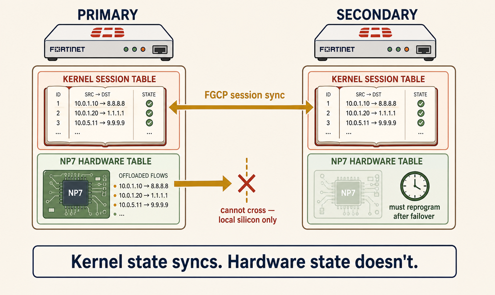
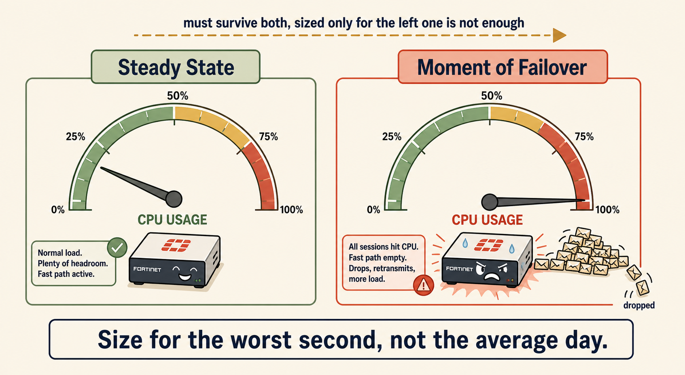
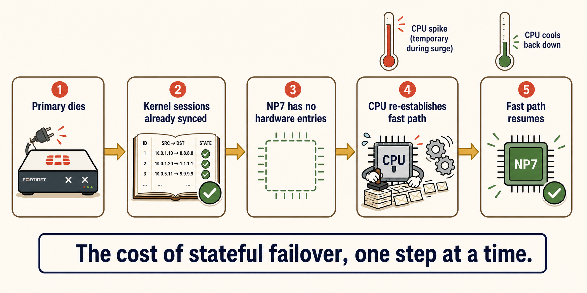

Why a synced session table doesn't mean a synced hardware fast path — and what that costs the CPU the instant failover happens.
FGCP synchronizes what the kernel knows. It never touches what the NP7 knows.
That one-sentence gap is the entire reason failover causes a CPU spike instead of a silent handoff — and it's the sizing detail most engineers miss until it costs them.
💭THINK FIRST · TWO TABLES
"Session sync" sounds like it should mean everything transfers. Test that assumption before reading on.
FGCP's sync link carries kernel-level session table entries between the two boxes. Does it also carry the NP7's internal hardware offload table? Why or why not?
When a synced session's first packet arrives at the new primary after failover, which component processes it — the NP7 or the CPU — and why?
Q1 — MODEL ANSWER
No. The NP7's internal table is local hardware state living inside that specific chip — a kernel-to-kernel sync link has no way to write into another box's silicon. Only the kernel-level session entry, the software record of the connection, crosses the sync link.
Q2 — MODEL ANSWER
The CPU. The new primary's NP7 starts with zero hardware entries for any 'inherited' session. The kernel recognizes the session and forwards the first packet(s) via the CPU path, which also reprograms the NP7 with a fresh hardware entry so later packets can ride the fast path again.
SECTION 01
Two Tables, One Sync Link

Kernel state crosses the sync link. NP7 hardware state never does.
images/s1-two-tables.png
Flat minimalistic but highly detailed cartoon illustration, modern vector-art aesthetic, warm colour palette (cream background, coral accents, muted gold highlights, sage greens, soft brown outlines), clean bold line work, no gradients, no photorealism. Two flat FortiGate box icons side by side, Box A (left, labeled 'PRIMARY') and Box B (right, labeled 'SECONDARY'), each drawn with two internal layers stacked vertically: an upper layer shaped like a soft ledger/book icon labeled 'KERNEL SESSION TABLE' in coral, and a lower layer shaped like a small circuit-board chip icon labeled 'NP7 HARDWARE TABLE' in sage green. A thick gold arrow runs between the two upper ledger layers labeled 'FGCP session sync', clearly crossing between the boxes. A second thick gold arrow is drawn starting at Box A's lower chip icon but stopping abruptly at a dashed 'X' barrier exactly at the midpoint between the boxes, labeled 'cannot cross — local silicon only'. Box B's chip icon is shown empty/faded with a small clock icon beside it labeled 'must reprogram after failover'. Bottom caption bar: 'Kernel state syncs. Hardware state doesn't.' Clean structured composition, generous spacing, educational and visually engaging.
Every offloaded session actually exists in two places at once: a kernel-level session table entry (software, holds the connection's metadata and the offload verdict) and a corresponding hardware entry programmed directly into the NP7 chip (silicon, is what actually lets packets bypass the CPU). FGCP's session synchronization link is a software mechanism between the two kernels — it keeps the kernel-level entries mirrored continuously while both boxes are alive.
What it cannot do is reach into the NP7 chip on the far side and program hardware entries remotely — that silicon state is local to each box. So the instant failover completes, the new primary's kernel already recognizes every synced session, but its NP7 has never heard of any of them. The very first packet of each session has to be re-processed by the CPU, which in turn reprograms the local NP7 so the fast path can resume for subsequent packets.
What's involved
Travels over FGCP sync?
Why
Kernel session entry
Yes
Software record — a kernel-to-kernel software channel can copy it
Configuration (policies, routes, profiles)
Yes — continuously
Kept identical proactively, before any failure
VPN SA / tunnel state
Yes
Part of the synced session state, same channel as TCP sessions
NP7 hardware offload entry
No — never
Local silicon state; no remote-write path into another box's chip
Analogy
Inheriting someone's address book, but not their muscle memory.
Kernel sync = the address book. You now know exactly who everyone is and how to reach them — nothing was lost.
NP7 hardware entry = speed-dial. Even with the address book in hand, you still have to dial the full number by hand the first time before speed-dial remembers it.
The CPU spike is you dialing every contact by hand, once, right after inheriting the book — briefly slower, then back to speed-dial speed.
🧠
MENTAL NOTE
Kernel sync ≠ hardware sync. The first packet of every inherited session is CPU-processed after failover, even though FGCP never dropped the connection itself.
ASK A QUESTION
ADD A NOTE
💭THINK FIRST · SIZING FOR THE WORST SECOND
This is where the concept turns into a real design decision — and a real exam question.
At the exact moment of failover, what fraction of the old primary's previously-offloaded traffic suddenly needs full CPU processing on the new primary?
If the CPU can't keep up with that surge, what specific failure mode follows — and why does it get worse instead of better?
Q1 — MODEL ANSWER
In the worst case, 100%. Every previously-offloaded session becomes CPU-bound simultaneously, all at once, for a brief window right after takeover.
Q2 — MODEL ANSWER
An overloaded CPU drops packets instead of queuing them. TCP interprets those drops as loss and retransmits — and those retransmissions add even more load onto an already-overloaded CPU. That's a feedback loop, not a graceful slowdown, and it can turn a brief spike into a sustained outage.
SECTION 02
Sizing for the Worst Second, Not the Average Day

Steady-state CPU load leaves no evidence of the surge it needs to survive.
images/s2-sizing-consequence.png
Flat minimalistic but highly detailed cartoon illustration, modern vector-art aesthetic, warm colour palette (cream background, coral accents, muted gold highlights, sage greens, soft brown outlines), clean bold line work, no gradients, no photorealism. A simple horizontal gauge/speedometer icon styled flat, with a needle. Two versions side by side: LEFT gauge labeled 'Steady State' shows the needle low, in the sage-green safe zone, next to a small calm FortiGate icon with a content facial expression. RIGHT gauge labeled 'Moment of Failover' shows the needle pinned into a coral red zone at the far edge, next to a FortiGate icon glowing slightly with small motion-lines and a strained expression, with tiny packet icons piling up beside it and a couple shown falling off the edge labeled 'dropped'. Above both gauges a dashed arrow connects them labeled 'must survive both, sized only for the left one is not enough'. Bottom caption bar: 'Size for the worst second, not the average day.' Clean structured composition, generous spacing, educational and visually engaging.
This is the direct design consequence of the kernel/NP7 split: an FGCP secondary can't be sized for its own normal traffic alone — it has to be sized to survive its partner's entire offloaded workload landing on its CPU all at once. A lone, non-HA FortiGate never has to plan for this, because there's no partner whose session table can suddenly appear in its lap.
The diagnostic trap is that 'high CPU after failover' and 'CPU overloaded and dropping traffic' look identical in a quick glance at a monitoring dashboard. The distinguishing evidence is retransmit and drop counters during the spike window, correlated against historical peak-hour throughput from FortiAnalyzer — not the CPU percentage number alone.
Exam tip: if a scenario describes an FGCP failover followed by a temporary CPU spike and asks "is this normal?" — the answer is almost always yes, that's expected NP7 resync behavior. The trap answer treats any CPU spike as a fault. The correct answer checks whether packets were actually dropped, not just whether the CPU was busy.
🧠
MENTAL NOTE
A CPU spike proves failover happened. It does not prove the box is safely sized. Check drop/retransmit counters against peak-hour traffic — a quiet-afternoon spike near the ceiling means no margin left for the worst-case failover.
What's the worst-case fraction of previously-offloaded traffic that becomes CPU-bound at once during failover?
Q1 — MODEL ANSWER
Because NP7 hardware programming is local silicon state that only the FGCP sync link's kernel-to-kernel software channel can't reach — there's no mechanism for one box's kernel to write directly into another box's chip.
Q2 — MODEL ANSWER
100% in the worst case — every session that was offloaded on the old primary becomes CPU-bound simultaneously the moment the new primary takes over.
SECTION 03
Lock It In

The full chain, start to finish.
images/s3-self-test.png
Flat minimalistic but highly detailed cartoon illustration, modern vector-art aesthetic, warm colour palette (cream background, coral accents, muted gold highlights, sage greens, soft brown outlines), clean bold line work, no gradients, no photorealism. A simple five-step horizontal flow diagram with rounded rectangle nodes connected by gold arrows: (1) 'Primary dies' — small broken FortiGate icon; (2) 'Kernel sessions already synced' — ledger icon with a checkmark; (3) 'NP7 has no hardware entries' — empty chip icon with a small dashed outline; (4) 'CPU re-establishes fast path' — CPU icon with small gear animation marks; (5) 'Fast path resumes' — chip icon now filled solid green with a checkmark. A small thermometer icon sits above node 4 showing a temporary spike into the coral zone that cools back to sage green above node 5. Bottom caption: 'The cost of stateful failover, one step at a time.' Clean structured composition, generous spacing, educational and visually engaging.
Chain it together, start to finish: FGCP session sync keeps kernel-level session entries mirrored continuously — but never touches the NP7's local hardware table. When failover happens, every one of those synced sessions is recognized by the new primary's kernel but unknown to its NP7. The first packets get CPU-processed to re-establish the fast path, and in the worst case every previously-offloaded session does this simultaneously — which is why sizing an FGCP secondary for its own steady-state load alone is a mistake.
Use this bite as retrieval practice, not a re-read: cover the mental notes below and try to reconstruct the full chain — kernel sync, NP7 locality, the 100% worst case, and the retransmit feedback loop — from memory first.
🧠
MENTAL NOTE
Self-test: (1) What travels over the FGCP sync link, and what doesn't? (2) What happens to the first packet of a resynced session? (3) What's the worst-case CPU-bound fraction at failover? (4) What counters distinguish 'busy' from 'overloaded and dropping'? (5) Why does peak-hour throughput matter more than average throughput for sizing?